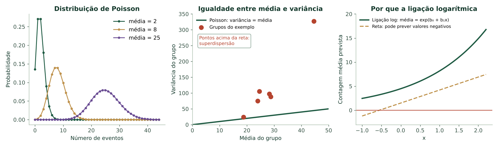
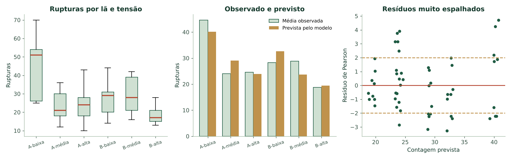

Regressão de Poisson
Modela contagens de eventos em função de um ou mais preditores, com efeitos multiplicativos sobre a taxa.
Comece por aqui
Quantas falhas ocorreram no turno? Quantos acidentes houve no trecho? Quantas rupturas apareceram na peça? Contagens não são medidas contínuas: são inteiros, nunca negativos, e sua variabilidade costuma crescer junto com a média. A regressão de Poisson é o modelo de partida para esse tipo de resposta.
Um dos primeiros usos célebres da distribuição de Poisson foi o estudo de Ladislaus Bortkiewicz (1898) sobre o número de soldados prussianos mortos por coice de cavalo, ano a ano, em catorze corpos do exército. É o exemplo clássico de eventos raros e independentes.
O que é o modelo
A ligação logarítmica tem duas consequências úteis. A média prevista é sempre positiva, como convém a uma contagem. E os efeitos passam a ser multiplicativos: cada preditor multiplica a contagem esperada por um fator, em vez de somar uma quantidade fixa.

Na distribuição de Poisson, a variância é igual à média. Esse é o pressuposto mais frequentemente violado na prática, e verificá-lo é parte obrigatória da análise.
Pressupostos e como verificá-los
| Pressuposto | Por que importa | Como verificar |
|---|---|---|
| Resposta é contagem (inteiro não negativo) | Definição do modelo. | Natureza da variável. |
| Observações independentes | Eventos agrupados ou em sequência violam a condição. | Delineamento; para dados agrupados, use GEE ou modelos mistos. |
| Variância igual à média (equidispersão) | Se violada, os erros-padrão ficam pequenos demais e os valores-p, otimistas. | Qui-quadrado de Pearson dividido pelos graus de liberdade (φ): valores bem acima de 1 indicam superdispersão. |
| Linearidade no log | O efeito de x é constante na escala logarítmica. | Resíduos contra o preditor; termos quadráticos ou splines. |
| Mesmo período ou mesma exposição | Contagens de janelas diferentes não são comparáveis. | Use um termo de offset: offset(log(exposicao)). |
| Sem excesso de zeros | Zeros em excesso indicam outro processo gerador. | Compare a frequência de zeros observada com a prevista. |
Hipóteses e estatística de teste
Em que:
- \(\mu\)
- contagem média esperada
- \(y_i\)
- contagem observada na unidade i
- \(\hat\mu_i\)
- contagem prevista pelo modelo
- \(b_j\)
- estimativa de máxima verossimilhança
- \(e^{b_j}\)
- razão de taxas: fator que multiplica a contagem esperada quando \(x_j\) aumenta uma unidade
- \(D\)
- deviance residual; sob bom ajuste, aproximadamente \(\chi^2_{n-p}\)
- \(\hat\phi\)
- parâmetro de dispersão estimado; próximo de 1 sob a Poisson
- \(n,\ p\)
- número de observações e de parâmetros
Exemplo numérico, passo a passo
No exemplo desta ficha, o modelo ajustado é \[\begin{aligned}\ln(\mu) &= 3{,}692-0{,}206\,(\text{lã B}) \\ &\quad -0{,}321\,(\text{tensão média}) \\ &\quad -0{,}519\,(\text{tensão alta}).\end{aligned}\]
Lã A com tensão baixa (referência): \(\ln(\mu)=3{,}692\) ⇒ \(\mu=e^{3{,}692}=40{,}12\) rupturas.
Lã A com tensão alta: \(\ln(\mu)=3{,}692-0{,}519=3{,}174\) ⇒ \(\mu=23{,}89\).
Razão de taxas da tensão alta: \(e^{-0{,}519}=0{,}595\). De fato, \(40{,}12\times0{,}595=23{,}89\): a tensão alta reduz a contagem esperada em cerca de 40%.
Lã B com tensão alta: \(e^{3{,}692-0{,}206-0{,}519}=19{,}44\). Os efeitos se multiplicam: \(40{,}12\times0{,}814\times0{,}595=19{,}44\).
Propriedades
- As contagens previstas são sempre positivas.
- Os efeitos são multiplicativos: \(e^{b}\) é uma razão de taxas, não uma diferença.
- Com offset, o modelo passa a descrever taxas por unidade de exposição (falhas por hora, acidentes por quilômetro).
- Se \(\hat\phi\) for bem maior que 1, os coeficientes continuam consistentes, mas os erros-padrão ficam subestimados por um fator de aproximadamente \(\sqrt{\hat\phi}\).
- A correção quase-Poisson mantém as estimativas e multiplica os erros-padrão por \(\sqrt{\hat\phi}\); a binomial negativa muda a distribuição e a função de variância.
- A deviance serve tanto para comparar modelos encaixados quanto para avaliar o ajuste global.
Como interpretar os resultados
| Elemento | O que informa | Cuidado |
|---|---|---|
| Coeficiente b | Variação no logaritmo da contagem esperada. | Pouco intuitivo; exponencie. |
| exp(b) | Razão de taxas: fator multiplicativo. | exp(b) = 0,6 significa redução de 40%. |
| Deviance / graus de liberdade | Qualidade do ajuste. | Bem acima de 1 indica superdispersão ou modelo mal especificado. |
| φ estimado | Grau de superdispersão. | φ = 4 significa variância quatro vezes maior que a esperada. |
| Valor-p | Evidência sobre o preditor. | Otimista se houver superdispersão não corrigida. |
Reporte as razões de taxas com intervalos de confiança, a deviance com os graus de liberdade e o parâmetro de dispersão.
Como executar no R e em Python
Onde executar o código em Python
Não é preciso instalar nada: o Google Colab é um computador na nuvem, gratuito, que executa Python pelo navegador e já traz as bibliotecas usadas aqui (numpy, scipy e matplotlib).
glm() com family = poisson pertence ao pacote stats, já instalado com o R. Para contagens observadas em períodos ou tamanhos diferentes, acrescente offset(log(exposicao)) à fórmula. family = quasipoisson aplica a correção de dispersão.
modelo <- glm(breaks ~ wool + tension, data = warpbreaks, family = poisson)
summary(modelo)
exp(coef(modelo))
O código Python desta ficha faz as contas passo a passo com numpy e scipy, para que cada resultado possa ser acompanhado. No dia a dia, a biblioteca statsmodels, também disponível no Google Colab, oferece esses modelos prontos.
Exemplo de aplicação
Contexto dos dados
O conjunto warpbreaks registra o número de rupturas do fio em 54 teares, combinando dois tipos de lã (A e B) e três níveis de tensão do fio (baixa, média e alta), com nove teares por combinação. A pergunta é se o tipo de lã e a tensão afetam a quantidade de rupturas.
Código em R
# Regressão de Poisson: exemplo completo ----
# Pacote: apenas o stats (já vem com o R). Dados: warpbreaks.
# 1. Dados: 54 teares; número de rupturas do fio por tipo de lã e tensão
str(warpbreaks)
aggregate(breaks ~ wool + tension, data = warpbreaks,
FUN = function(v) c(media = mean(v), variancia = var(v)))
# 2. Ajuste do modelo com ligação logarítmica
modelo <- glm(breaks ~ wool + tension, data = warpbreaks, family = poisson)
summary(modelo)
# 3. Razões de taxas (exp dos coeficientes) e intervalos de confiança de 95%
exp(cbind(razao_de_taxas = coef(modelo), confint(modelo)))
# 4. Testes da razão de verossimilhanças para cada termo
anova(modelo, test = "Chisq")
# 5. Diagnóstico de superdispersão
X2 <- sum(residuals(modelo, type = "pearson")^2)
phi <- X2 / df.residual(modelo)
c(qui2_Pearson = X2, gl = df.residual(modelo), phi = phi,
deviance_por_gl = deviance(modelo) / df.residual(modelo))
pchisq(deviance(modelo), df.residual(modelo), lower.tail = FALSE)
# 6. Correção quase-Poisson: mesmos coeficientes, erros-padrão maiores
modelo_qp <- glm(breaks ~ wool + tension, data = warpbreaks, family = quasipoisson)
summary(modelo_qp)
# 7. Contagens previstas por combinação
novo <- expand.grid(wool = c("A", "B"), tension = c("L", "M", "H"))
cbind(novo, previsto = round(predict(modelo, novo, type = "response"), 3))
# 8. Gráficos
par(mfrow = c(1, 2))
boxplot(breaks ~ tension + wool, data = warpbreaks, col = "gray85", las = 2, xlab = "", ylab = "Rupturas")
plot(fitted(modelo), residuals(modelo, type = "pearson"), pch = 19,
xlab = "Contagem prevista", ylab = "Resíduo de Pearson"); abline(h = 0, col = "red")
par(mfrow = c(1, 1))
A mesma análise em Python, com os resultados
Cole o código em um notebook do Google Colab ↗ e execute com Shift+Enter. Os valores abaixo são a saída desse código.
# Bibliotecas: numpy, scipy e matplotlib (já instaladas no Google Colab)
import numpy as np
from scipy import stats, optimize
import matplotlib.pyplot as plt
from scipy.special import gammaln
def glm_poisson(X, y, nomes, theta=None):
"""GLM com ligação log por mínimos quadrados ponderados iterativos.
theta = None: família Poisson. theta numérico: binomial negativa com esse parâmetro."""
b = np.zeros(X.shape[1]); b[0] = np.log(y.mean())
for _ in range(100):
mu = np.exp(X @ b)
W = mu if theta is None else mu / (1 + mu / theta)
z = X @ b + (y - mu) / mu
b_novo = np.linalg.solve(X.T @ (X * W[:, None]), X.T @ (W * z))
if np.max(np.abs(b_novo - b)) < 1e-10: b = b_novo; break
b = b_novo
mu = np.exp(X @ b)
W = mu if theta is None else mu / (1 + mu / theta)
cov = np.linalg.inv(X.T @ (X * W[:, None])); ep = np.sqrt(np.diag(cov))
zv = b / ep; pv = 2 * stats.norm.sf(np.abs(zv)); zc = stats.norm.ppf(0.975)
print(f"{'Termo':<14}{'Estimativa':>11}{'Erro-padrão':>13}{'z':>8}{'p-valor':>11}{'exp(b)':>9}{'IC 95% de exp(b)':>24}")
for nm, bi, ei, zi, pi in zip(nomes, b, ep, zv, pv):
print(f"{nm:<14}{bi:>11.4f}{ei:>13.4f}{zi:>8.3f}{pi:>11.2e}{np.exp(bi):>9.3f} [{np.exp(bi-zc*ei):>7.3f}; {np.exp(bi+zc*ei):>7.3f}]")
if theta is None:
logv = np.sum(y * np.log(mu) - mu - gammaln(y + 1))
else:
logv = np.sum(gammaln(y + theta) - gammaln(theta) - gammaln(y + 1)
+ theta * np.log(theta / (theta + mu)) + y * np.log(mu / (theta + mu)))
return dict(b=b, ep=ep, mu=mu, cov=cov, logv=logv, p=X.shape[1])
# Dados do conjunto warpbreaks: 54 teares; número de rupturas do fio
quebras = np.array([26, 30, 54, 25, 70, 52, 51, 26, 67, 18, 21, 29, 17, 12, 18, 35, 30, 36,
36, 21, 24, 18, 10, 43, 28, 15, 26, 27, 14, 29, 19, 29, 31, 41, 20, 44,
42, 26, 19, 16, 39, 28, 21, 39, 29, 20, 21, 24, 17, 13, 15, 15, 16, 28])
la = np.repeat([0, 1], 27) # tipo de lã: 0 = A, 1 = B
tensao = np.tile(np.repeat([0, 1, 2], 9), 2) # tensão: 0 = baixa (L), 1 = média (M), 2 = alta (H)
# Matriz do modelo: intercepto, lã B, tensão média, tensão alta (níveis de referência: lã A e tensão baixa)
X = np.column_stack([np.ones(54), la, (tensao == 1) * 1.0, (tensao == 2) * 1.0])
nomes = ["(Intercepto)", "la B", "tensao M", "tensao H"]
n = len(quebras)
print(f"n = {n} | média = {quebras.mean():.3f} | variância = {quebras.var(ddof=1):.3f} | razão variância/média = {quebras.var(ddof=1)/quebras.mean():.3f}")
print("\nMédia e variância por combinação:")
for w, nw in [(0, "A"), (1, "B")]:
for t, nt in [(0, "baixa"), (1, "media"), (2, "alta")]:
g = quebras[(la == w) & (tensao == t)]
print(f" la {nw}, tensao {nt:<6} n = {len(g)} | média = {g.mean():6.3f} | variância = {g.var(ddof=1):7.3f}")
# 1. Ajuste do modelo de Poisson com ligação log
m = glm_poisson(X, quebras, nomes)
# 2. Deviance, AIC e teste global
mu0 = quebras.mean()
dev = 2 * np.sum(np.where(quebras > 0, quebras * np.log(quebras / m["mu"]), 0) - (quebras - m["mu"]))
dev0 = 2 * np.sum(np.where(quebras > 0, quebras * np.log(quebras / mu0), 0) - (quebras - mu0))
print(f"\nDeviance nula = {dev0:.3f} ({n-1} gl) | deviance residual = {dev:.3f} ({n-m['p']} gl) | AIC = {-2*m['logv'] + 2*m['p']:.2f}")
print(f"Teste global: G = {dev0 - dev:.3f}, gl = {m['p']-1}, p-valor = {stats.chi2.sf(dev0-dev, m['p']-1):.3e}")
# 3. Diagnóstico de superdispersão
X2 = np.sum((quebras - m["mu"])**2 / m["mu"])
phi = X2 / (n - m["p"])
print(f"\nQui-quadrado de Pearson = {X2:.3f} | phi = X2 / gl = {phi:.3f} (esperado proximo de 1 sob Poisson)")
print(f"Deviance / gl = {dev / (n - m['p']):.3f} | p-valor do ajuste = {stats.chi2.sf(dev, n - m['p']):.3e}")
# 4. Taxas estimadas (contagens médias previstas)
print("\nContagem média prevista por combinação:")
for w, nw in [(0, "A"), (1, "B")]:
for t, nt in [(0, "baixa"), (1, "media"), (2, "alta")]:
x0 = np.array([1, w, t == 1, t == 2], dtype=float)
print(f" la {nw}, tensao {nt:<6} {np.exp(x0 @ m['b']):6.3f}")
# 5. Erros-padrão robustos (quasi-Poisson: multiplicam o erro-padrão por raiz de phi)
print("\nCorreção quase-Poisson (erro-padrão multiplicado por raiz de phi):")
for nm, bi, ei in zip(nomes, m["b"], m["ep"]):
eq = ei * np.sqrt(phi)
print(f" {nm:<14} erro-padrão {ei:.4f} -> {eq:.4f} | t = {bi/eq:6.3f} | p-valor = {2*stats.t.sf(abs(bi/eq), n-m['p']):.4f}")
# 6. Exemplo numérico do texto: taxa prevista para la A e tensao alta
x0 = np.array([1, 0, 0, 1.])
print(f"\nla A e tensao alta: preditor linear = {x0 @ m['b']:.4f} | taxa = exp(...) = {np.exp(x0 @ m['b']):.3f}")
# 7. Gráficos: contagens observadas e resíduos
res_p = (quebras - m["mu"]) / np.sqrt(m["mu"])
fig, ax = plt.subplots(1, 2, figsize=(10, 4))
ax[0].boxplot([quebras[(la == w) & (tensao == t)] for w in (0, 1) for t in (0, 1, 2)])
ax[0].set_xticks(range(1, 7)); ax[0].set_xticklabels(["A-L", "A-M", "A-H", "B-L", "B-M", "B-H"])
ax[0].set_ylabel("Rupturas")
ax[1].scatter(m["mu"], res_p); ax[1].axhline(0, color="red")
ax[1].set_xlabel("Contagem prevista"); ax[1].set_ylabel("Resíduo de Pearson")
plt.show()
Resultados da execução
n = 54 | média = 28.148 | variância = 174.204 | razão variância/média = 6.189 Média e variância por combinação: la A, tensao baixa n = 9 | média = 44.556 | variância = 327.528 la A, tensao media n = 9 | média = 24.000 | variância = 75.000 la A, tensao alta n = 9 | média = 24.556 | variância = 105.528 la B, tensao baixa n = 9 | média = 28.222 | variância = 97.194 la B, tensao media n = 9 | média = 28.778 | variância = 88.944 la B, tensao alta n = 9 | média = 18.778 | variância = 23.944 Termo Estimativa Erro-padrão z p-valor exp(b) IC 95% de exp(b) (Intercepto) 3.6920 0.0454 81.301 0.00e+00 40.124 [ 36.707; 43.858] la B -0.2060 0.0516 -3.994 6.49e-05 0.814 [ 0.736; 0.900] tensao M -0.3213 0.0603 -5.332 9.73e-08 0.725 [ 0.644; 0.816] tensao H -0.5185 0.0640 -8.107 5.21e-16 0.595 [ 0.525; 0.675] Deviance nula = 297.372 (53 gl) | deviance residual = 210.392 (50 gl) | AIC = 493.06 Teste global: G = 86.980, gl = 3, p-valor = 9.750e-19 Qui-quadrado de Pearson = 213.076 | phi = X2 / gl = 4.262 (esperado proximo de 1 sob Poisson) Deviance / gl = 4.208 | p-valor do ajuste = 1.446e-21 Contagem média prevista por combinação: la A, tensao baixa 40.124 la A, tensao media 29.097 la A, tensao alta 23.890 la B, tensao baixa 32.654 la B, tensao media 23.681 la B, tensao alta 19.443 Correção quase-Poisson (erro-padrão multiplicado por raiz de phi): (Intercepto) erro-padrão 0.0454 -> 0.0937 | t = 39.384 | p-valor = 0.0000 la B erro-padrão 0.0516 -> 0.1065 | t = -1.935 | p-valor = 0.0587 tensao M erro-padrão 0.0603 -> 0.1244 | t = -2.583 | p-valor = 0.0128 tensao H erro-padrão 0.0640 -> 0.1320 | t = -3.927 | p-valor = 0.0003 la A e tensao alta: preditor linear = 3.1735 | taxa = exp(...) = 23.890

| Termo | Estimativa | Erro-padrão | z | Razão de taxas | IC 95% |
|---|---|---|---|---|---|
| (Intercepto) | 3,6920 | 0,0454 | 81,30 | 40,12 | [36,71; 43,86] |
| lã B | −0,2060 | 0,0516 | −3,99 | 0,814 | [0,736; 0,900] |
| tensão média | −0,3213 | 0,0603 | −5,33 | 0,725 | [0,644; 0,816] |
| tensão alta | −0,5185 | 0,0640 | −8,11 | 0,595 | [0,525; 0,675] |
| Elemento | Valor | Leitura |
|---|---|---|
| Deviance nula → residual | 297,37 (53 g.l.) → 210,39 (50 g.l.) | AIC = 493,06. |
| Teste global | G = 86,98; 3 g.l.; p = 9,8 × 10⁻¹⁹ | Os fatores importam. |
| Qui-quadrado de Pearson | 213,08 em 50 g.l. | φ = 4,26: a variância é quatro vezes a esperada. |
| Deviance / g.l. | 4,21 | Mesma conclusão. |
| Teste de ajuste | p = 1,4 × 10⁻²¹ | O modelo de Poisson não descreve bem a dispersão. |
| Termo | EP Poisson | EP corrigido | Valor-p corrigido |
|---|---|---|---|
| lã B | 0,0516 | 0,1065 | 0,0587 |
| tensão média | 0,0603 | 0,1244 | 0,0128 |
| tensão alta | 0,0640 | 0,1320 | 0,0003 |
Leitura: a tensão alta reduz as rupturas esperadas em 40% em relação à tensão baixa, e a lã B em 19% em relação à lã A. O problema está na dispersão: as variâncias dos grupos (de 24 a 328) são muito maiores que as médias (de 19 a 45), e φ = 4,26 confirma a superdispersão. Com a correção quase-Poisson, o efeito do tipo de lã deixa de ser significativo ao nível de 5% (p = 0,059), enquanto o da tensão se mantém. A conclusão prática é que o modelo de Poisson simples exagera a precisão: o passo seguinte é a regressão binomial negativa.
Erros comuns
| Erro | Como evitar |
|---|---|
| Ignorar a superdispersão | Calcule φ sempre; corrija com quase-Poisson ou binomial negativa. |
| Esquecer o offset | Contagens de períodos ou tamanhos diferentes exigem exposição no modelo. |
| Ler exp(b) como diferença | É um fator multiplicativo. |
| Usar Poisson para proporções | Contagens com total conhecido pedem modelo binomial. |
| Ignorar excesso de zeros | Considere modelos com inflação de zeros ou com barreira. |
| Usar regressão linear em contagens pequenas | Prevê valores negativos e supõe variância constante. |
| Confiar no valor-p sem olhar o ajuste | Deviance muito acima dos graus de liberdade invalida a inferência. |
Alternativas e fluxo de trabalho
| Procedimento | Quando preferir |
|---|---|
| Quase-Poisson | Superdispersão moderada; mantém as estimativas e corrige os erros-padrão. |
| Binomial negativa | Superdispersão; modelo de verossimilhança completo, com AIC comparável. |
| Modelos com inflação de zeros ou com barreira | Excesso de zeros em relação ao previsto. |
| Modelos lineares generalizados | Visão geral da família a que a Poisson pertence. |
| GEE / modelos mistos | Contagens agrupadas ou repetidas. |
| Regressão de Poisson com variância robusta | Interesse em razões de risco com resposta binária. |
- Confirme que a resposta é uma contagem e verifique a exposição.
- Compare médias e variâncias por grupo.
- Ajuste o modelo de Poisson.
- Calcule φ e a razão deviance / graus de liberdade.
- Se houver superdispersão, passe para quase-Poisson ou binomial negativa.
- Interprete por razões de taxas e contagens previstas.
Referências desta ficha
- NELDER, John A.; WEDDERBURN, Robert W. M. Generalized linear models. Journal of the Royal Statistical Society: Series A, v. 135, n. 3, p. 370-384, 1972.
- McCULLAGH, Peter; NELDER, John A. Generalized linear models. 2. ed. London: Chapman & Hall, 1989.
- CAMERON, A. Colin; TRIVEDI, Pravin K. Regression analysis of count data. 2. ed. Cambridge: Cambridge University Press, 2013.
- BORTKIEWICZ, Ladislaus von. Das Gesetz der kleinen Zahlen. Leipzig: Teubner, 1898.
- HILBE, Joseph M. Modeling count data. Cambridge: Cambridge University Press, 2014.
- DOBSON, Annette J.; BARNETT, Adrian G. An introduction to generalized linear models. 4. ed. Boca Raton: CRC Press, 2018.
- TIPPETT, Leonard H. C. The methods of statistics. 4. ed. London: Williams and Norgate, 1950. (Conjunto de dados
warpbreaks, pacotedatasetsdo R.) - R CORE TEAM. R: a language and environment for statistical computing. Vienna: R Foundation for Statistical Computing, 2026. Disponível em: https://www.r-project.org/. (Função
glm, pacotestats.) - POSIT TEAM. RStudio: integrated development environment for R. Boston: Posit Software, PBC. Disponível em: https://posit.co/download/rstudio-desktop/.
- VIRTANEN, Pauli et al. SciPy 1.0: fundamental algorithms for scientific computing in Python. Nature Methods, v. 17, p. 261-272, 2020. DOI: 10.1038/s41592-019-0686-2. (Funções do módulo
scipy.stats.) - HARRIS, Charles R. et al. Array programming with NumPy. Nature, v. 585, p. 357-362, 2020. DOI: 10.1038/s41586-020-2649-2.
- HUNTER, John D. Matplotlib: a 2D graphics environment. Computing in Science & Engineering, v. 9, n. 3, p. 90-95, 2007.
- GOOGLE. Google Colaboratory. Disponível em: https://colab.research.google.com/.
- As figuras desta ficha foram elaboradas pelo autor.

Prof. Dr. Cássius Henrique Xavier Oliveira
Professor · ICTIN/UFLA · Estatística, Confiabilidade e Ciência de Dados.
Conheça minha trajetória e projetos →